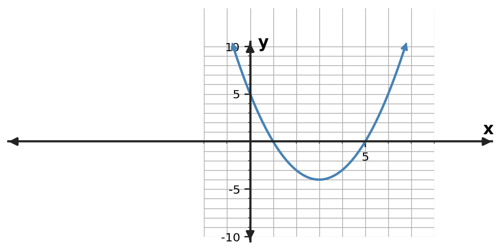

1. For $y=(x-4)^2-7$, state the vertex.
2. For $y=(x+5)^2+3$, state the vertex.
3. For $y=(x+4)(x-6)$, state the zeros.
4. For $y=2(x-3)(x+7)$, state the zeros.
5. For $y=x^2+5x-8$, state the $y$-intercept.
6. For $y=-2x^2+3x+9$, state the $y$-intercept.
7. Rewrite $y=(x+4)(x-6)$ in standard form.
8. Rewrite $y=(x+5)(x-5)$ in standard form.
9. Rewrite $y=(x-1)(x-7)$ in standard form.
10. Rewrite $y=x^{2} + 2x - 15$ in factored form.
11. Rewrite $y=x^{2} - 9x + 8$ in factored form.
12. Rewrite $y=x^{2} + 8x + 7$ in factored form.
13. You are solving $f(x)=0$ for a quadratic and all three equivalent forms are available. Which form usually gives the solutions most directly?
14. You need the vertex and axis of symmetry of a quadratic. Which form usually makes both features easiest to read?
15. You need the $y$-intercept of a quadratic without doing any substitution. Which form usually makes it easiest to read?
16. A student says factored form is always the best form. Give one task for which vertex form is more efficient.
17. Use the graph to read the zeros. Then choose which form—standard, vertex, or factored—would preserve those zeros most visibly.

18. Use the table’s symmetry to identify the vertex, then write a vertex-form model with $a=1$.
| $x$ | $y$ |
|---|---|
| $1$ | $-2$ |
| $2$ | $-5$ |
| $3$ | $-6$ |
| $4$ | $-5$ |
| $5$ | $-2$ |
19. Show that $y=(x+4)(x-6)$ and $y=x^{2} - 2x - 24$ are equivalent by expanding the factored form.
20. For the equivalent forms $y=(x+5)(x-7)$ and its standard form, which form reveals the $x$-intercepts without further algebra?
21. For $y=(x-4)^2-9$, which visible feature would take more work to obtain: the vertex or the zeros?
22. A fountain's path is modeled by a quadratic, and the question asks for its greatest height and where it occurs. Which form is most useful first? Explain.
23. A projectile model asks when the object is on the ground, so you need the zeros. Would factored form or vertex form usually be more useful first? Explain.
24. Rewrite $y=(x+5)^2-25$ in factored form by recognizing a difference of squares.